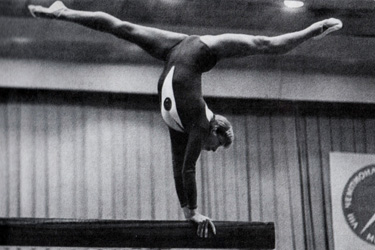

Tamara Lazakovich (USSR)
1971 European AA Champion
1972 Olympic AA Bronze Medalist

|
Medal Total Olympic
Games:
1 Gold, 2 Silver, 2 Bronze
|
Tamara was born on March 11, 1954 in Gusevo. She was invited to join Dynamo gymnastics club in 2nd grade by a coach who visited her class in the Belarussian city of Vitebsk. She went and immediately quit because she didn't find it interesting. The coach, however, was stubborn and convinced her to return. Soon, coach Vikenty Dmitriev and his pupil Larissa Petrik noticed Tamara. Her home life was unpleasant (her father was an alcoholic) so Tamara spent lots of time in the gym.
In 1968, at age 14, Tamara hoped to be a member of the Soviet Olympic Team. It didn't happen. But after winning the 1971 USSR Spartakiade and European Championships, the path to Munich was open. She won 4 medals in Munich and was awarded the Badge of Honor. A knee injury sustained during the Soviet gymnastics team's US tour in 1973 led to her retirement. She married a wrestler and gave birth to a daughter, Svetlana. She worked as a coach alongside Dmitriev briefly, but she was unable to hold a job due to her drinking. She died on November 1, 1992. Visit Lazakovich's website for more information.
Competition Results
1967
Jr. USSR Cup: 3rd AA
USSR Championships: 6th B
USSR Cup: 2nd V
1968
Jr. Friendship Tournament: 1st Team, 2nd AA, 1st B, 2nd UB,
2nd FX
Jr. USSR Championships: 1st AA, 1st VT, 1st UB, 1st BB, 1st FX
1969
Dinamo Clubs (USSR/GDR/TCH) Meet: 1st Team, 3rd AA
Jr. Friendship Tournament: 1st Team, 1st AA, 1st UB, 1st
B, 4th V
USSR Schoolchildren's Spartakiad: 2nd Team, 2nd AA, 1st V, 2nd BB, 3rd UB, 3rd FX
1970
Belarus Championships: 1st AA
Chunichi Cup: 1st AA
Dinamo Championships: 2nd AA, 1st V, 1st UB, 3rd FX
Jr. Friendship Tournament (Druzhba): 1st Team, 1st AA, 1st V, 1st B, 2nd UB, 2nd FX
USSR Championships: 3rd AA, 1st B, 4th V, 4th FX
USSR Cup: 6th AA
USSR-GDR: 1st Team, 3rd AA
World Championships: 1st Team, 21st AA
1971
Belarus Cup: 2nd AA, 1st FX
Dinamo Championships: 1st AA
European Championships: 1st AA, 1st UB,
1st B, 2nd V, 2nd FX
Spartakiade of the Belarussian Republic: 2nd AA
USSR Championships: 1st AA, 1st UB, 3rd B, 3rd FX, 4th V
USSR Cup: 5th AA
USSR Spartakiade: 1st AA
1972
Olympics: 1st Team, 3rd AA, 2nd
B, 3rd FX, 6th V
USSR Championships: 2nd AA, 3rd V, 3rd UB, 3rd B, 8th FX
USSR Cup: 3rd AA
USSR-NOR: 1st Team, 1st AA
This page was created on March 12, 2000
and was last updated on May 10, 2026.
© Gymn Forum